The Game
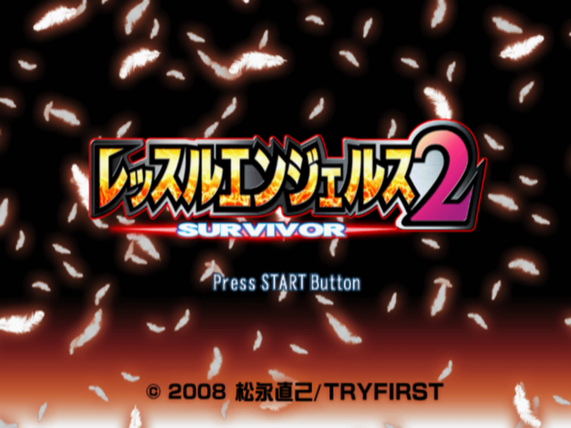
Wrestle Angels: Survivor 2 (レッスルエンジェルス サバイバー2, Ressuru Enjerusu Sabaibā Tsū) is a women's pro-wrestling management game for the PlayStation 2, released in Japan in 2008. It was never released outside Japan. This guide was written alongside the English fan translation, so every name and menu label is the one the translation shows.
What sets it apart:
- You're the president. Found a promotion, scout and sign wrestlers, negotiate their salaries, train them, book shows across Japan's prefectures, and win market share from the rival promotions until the Final Series. See Management.
- Matches are a card game. Each exchange both corners play a card, and the stronger card's move happens. See How a Match Works.
- Three eras and president skills change who's around and how you play: a scene short of homegrown talent, a warring-states era of rising and falling promotions, or a mature scene around New Japan Joshi Pro.
- Every wrestler has her own story: about a hundred short scenes each, from scouting to retirement, and private events and a personal ending for the ones who trust you most.
- A big roster: 79 Japanese wrestlers in two personas each, and 84 from overseas. See The Roster.
Facts in this guide are marked by where they come from: verified in game was seen happen in an emulator; from the code was read in the game's executable or data but not yet seen running; (fans) comes from Japanese fan sources; (unverified) is a reading we couldn't confirm. Much of this guide comes from reading the code, so corrections from play are very welcome (see Contributing).
For when things happen (every event by month, what unlocks it, and when each wrestler debuts in each era), see the companion event timeline.
Back to topModes
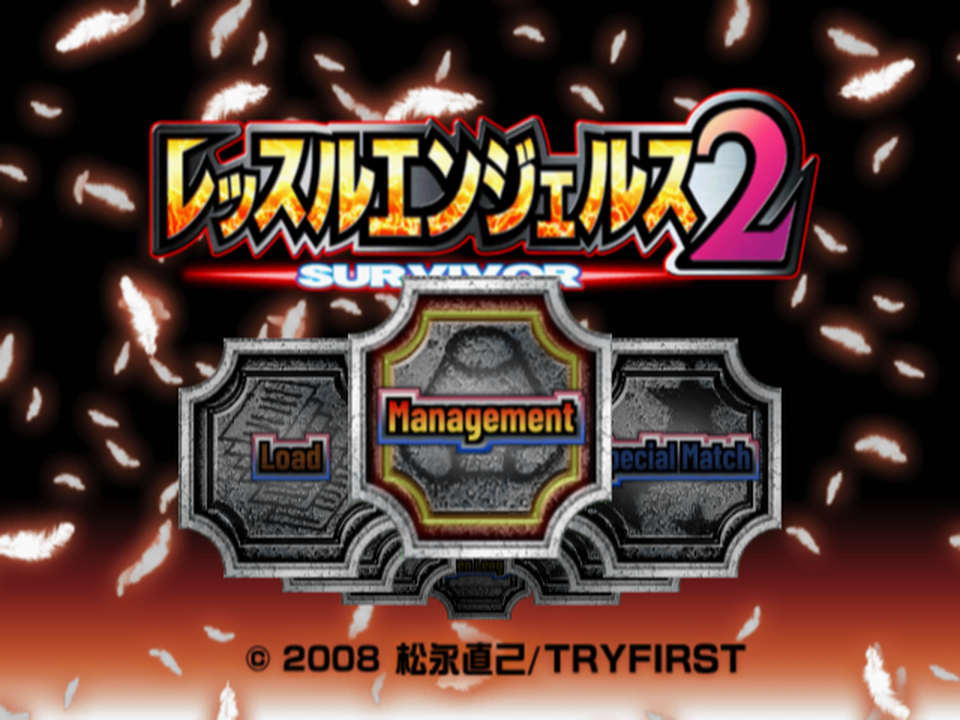
Press START on the title for the mode select: a carousel of plates, turned with ← → and chosen with Circle. Nothing is locked from the code.
| Plate | Japanese | What it is |
|---|---|---|
| Management | 団体経営 | The main game: NEW GAME or CONTINUE. See Management. |
| Special Match | 特別試合 | One exhibition match: singles, tag or six-woman tag, with any wrestlers. |
| Team Battle | 団体戦 | Team exhibition: Random Match, Elimination or Survival Tag (unverified that it can be selected). |
| One-Night Tournament | ワンナイトトーナメント | A knockout bracket of 4, 8 or 16 teams. |
| Open League | オープンリーグ | A round robin of 4, 8 or 16 teams. |
| Gallery | ギャラリー | Event pictures you've seen in management mode. See The Gallery. |
| Options | オプション | Sound, voice, effects and music volume, vibration, message speed, whether to watch CPU promotions' business, how move art is shown, and training animations. |
| Load | ロード | Loads wrestler data and the gallery from the memory card. |
Setting Up an Exhibition Match
- Choose Singles Match, Tag Match or Six-Woman Tag.
- Pick the wrestlers from the whole roster, foreign wrestlers included. Triangle shows a wrestler's details; START moves on.
- On the match start screen, each wrestler's control mode shows under her name; choose Watch or Skip and Start Match (Before the Bell).
- After the match: the finish, the match time, "Winner: …!" and the winner's quote.
Saving
- The memory card needs at least 700 KB free. Without it the game offers to start anyway.
- In management mode, press START on the office's main menu for the system menu: Save, Load, Options, Change Years, Watch CPU and Quit Game from the code. There are three save slots.
- Gallery progress is shared by all three slots and never shrinks.
- Saves from the original Japanese game work with the English patch verified in game.
Controls
Menus work the same everywhere: Circle chooses, Cross goes back, and your secretary reads a help line for the highlighted item.
| Button | What it does |
|---|---|
| Circle | Choose |
| Cross | Back; delete a letter in name entry |
| Triangle | A wrestler's details, in lists |
| Square | Sort the rankings; pick a match at random when booking |
| L1 R1 | Turn pages; switch character sets in name entry |
| L2 | Show share by prefecture on maps; change a match when booking |
| R2 | Reverse a sort; put a title on the line when booking |
| SELECT | Sort the card automatically when booking |
| START | Move on from a selection screen; the system menu in the office; the match menu in a match |
The match controls are under Match Controls.
PCSX2 shows some visual glitches early in the game. The software renderer fixes most of them, but then the intro screens look half cut off. The original Japanese game runs the same way.
How a Match Works
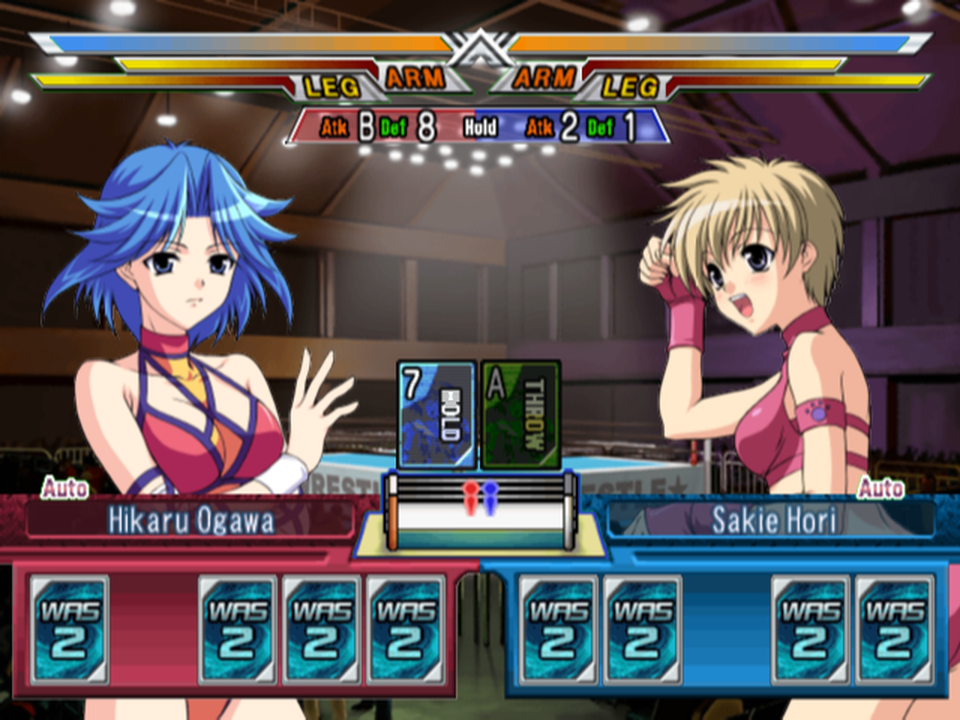
You don't steer the wrestlers. A match is a card game played one round at a time, and each round is an exchange:
- Both corners hold five cards. Each card is a move type with a number from 1 to 10 (10 shows as A).
- Each corner plays one card, and picks which move of that type to try (or lets the game pick).
- Each card gets a score. The higher score wins, and only the winner's move happens.
- Each side draws a new card, and the next exchange begins.
The score is arithmetic you can see on screen: the card's number, plus your attack grade in that type, minus the opponent's defence grade in that type. There's no dice roll in the score; the luck is in the cards, and in what happens after: reversals, pins and saves from the code.
Matches end by pinfall, submission or, new in this game, a KO or referee stoppage. There's no count-out or disqualification, and if the exchange limit runs out the match is a draw.
Small moves early, big moves late. Play the types where your attack beats her defence, save the finisher card for a big move, use Take the Hit when a big blow is coming, and only go for the pin when her health bar is empty.
Before the Bell
The match start screen shows each wrestler's control mode under her name, with Watch / Skip and Start Match. Skip decides the match without playing it (Matches You Don't Watch).
| Mode | You choose | The game chooses |
|---|---|---|
| COM | nothing | the card and the move |
| Auto | nothing: your wrestler plays herself | the card and the move, like COM but with your better card numbers |
| Semi-Auto | the card | the move, shown with a rough success % |
| Manual | the card and the move | nothing |
Each wrestler keeps her own mode and controller, so tag partners can be on different pads. You can switch modes in the middle of a match from the START menu from the code.
Match Controls
| When | Button | What it does |
|---|---|---|
| Choosing a card | ← → | Browse your hand |
| Circle | Play the card (Manual: then pick the move; a Double card: pick the partner first) | |
| Square | Command list: Pin (in the ring) or Return (outside), and Tag in team matches | |
| Cross | Slide the cards and gauges away to watch the ring; again to bring them back (unverified) | |
| Any time | START | The match menu: change your Control Mode, Options, or Skip to End of Match verified in game |
| Choosing a move (Manual) | ↑ ↓, Circle | Her moves of that type usable from where she is, with their levels |
| Caught in a hold | ↑ ↓, Circle | Break Free or Reach the Ropes (Submissions) |
| Watching CPU or Auto | START or R1 | Open the match menu at the next CPU turn, to take over or skip |
Commands only happen if your card wins the exchange. A hold can't pin, so it cancels Pin. A card with no move usable from where she stands can't be played from the code.
Reading the Match Screen
- Health bars along the top, with ARM and LEG meters. Holds and some moves wear down a limb; the limb meters never recover during a match.
- Atk / Def grades for Throw, Hold, Power, Strike and Aerial: 0-9, then A-E for 10-14 and S for 15.
- The cards played this exchange, and the small ring showing where the wrestlers are.
- In Semi-Auto, the chosen move with a %: a rough guide only, since it ignores the opponent's bonuses and the tie rule.
The Cards
| Card | Its score uses | Notes |
|---|---|---|
| Throw Hold Power Strike Aerial | your attack − her defence in that type | The everyday cards. |
| Other | your Speed − her Speed | Each wrestler's own extras: weapons, dirty tricks, cradles, and Take the Hit. At most one in your hand. |
| Finisher | always wins | One of her (up to two) finishers, +40 damage. See Finisher Cards. |
| Double | number + 2, plus a streak term | Team matches only: a double-team move with a partner. |
What You're Dealt
After every exchange each side draws one card from the code:
- Its type follows her strengths. Her five attack grades are ranked: her best type comes up 25% of the time, then 21%, 17%, 15% and 14%; Other 8%. With Ring General the best type is 30%. (Fans quote the same odds from the official guide book.)
- Its number is a fresh roll each time; there's no deck. Players and the CPU roll from different tables, and the CPU's is worse:
| Card number | 1 | 2 | 3 | 4 | 5 | 6 | 7 | 8 | 9 | A | Average |
|---|---|---|---|---|---|---|---|---|---|---|---|
| You (Manual, Semi-Auto, Auto) | 5.5% | 5.5% | 5.5% | 5.5% | 11% | 11% | 17% | 17% | 11% | 11% | 6.40 |
| COM | 7% | 7% | 8% | 8% | 10% | 10% | 15% | 15% | 10% | 10% | 6.02 |
- Finisher cards: chance % = grit + 7 − 2 × her health in tenths + popularity ÷ 100, +3 with Big-Match. So they come as she gets hurt, sooner for gritty and popular wrestlers. After the first, more only while she's 5+ tenths of health behind. The CPU can't get another within 10 exchanges.
- Double cards (team matches): 10-21% by how well she gets on with a partner, once she has lost some health and while the opponent is below 80%.
- If a new card would leave a full hand with nothing playable, it becomes a Throw card.
Who Wins an Exchange
Both cards are scored like this from the code, and the higher score wins:
| Part | Adds |
|---|---|
| The card's number | 1 to 10 |
| Your attack grade in the card's type (+1 with that type's Atk skill) | 0 to 16 |
| Her defence grade in that type (+1 with that type's Def skill) | subtracted |
| Level cost: the move's level, if it's bigger than the health she has lost | subtracted: 0 to 9 |
| Comeback bonus after you lost 3 / 4 / 5 / 6 / 7+ exchanges in a row | +1 / +3 / +5 / +7 / +9 |
| The move's own bonus against a downed opponent, or penalty against a standing one | −1 to +6 |
| Asking to tag out to a fresher partner (Tag Matches) | the health gap in tenths, doubled at 5+ |
| Take the Hit last exchange | +its level |
| Fighting in her home prefecture; the red corner in a title match; Clutch below 50% and 5+ tenths behind | +1 each |
Ties go to whoever lost the previous exchange (the very first tie is a coin flip). There's no random term and no difficulty bonus: the difficulty LEVEL only sets your starting money. A few skills shift grades too: Explosive (+1 attack in her best of Throw, Strike or Aerial), Fighting Spirit (+1 against a much higher-rated opponent), and an opposing partner's Trash Talk from the apron (−1).
Try It: The Exchange Calculator
Set up both corners' cards and see who wins and why, using the grades on the match screen.
Red corner
VS
Blue corner
Leaves out the small bonuses (skills, home, title, move position bonuses, tag request, Take the Hit).
The Level Cost: Small Moves Early
Every move has a level from 1 to 9. If the level is higher than the health the opponent has lost, counted in tenths of her bar, the whole level comes off your score:
Semi-Auto and the CPU usually take one of the three biggest moves that are free.
Take the Hit
New in Survivor 2: some wrestlers have Take the Hit as an Other move. Playing it always loses the exchange, but the blow that lands does 15% less damage per level of her Take the Hit (one level more with Iron Wall), and next exchange her score gets +its level. A level-6 Take the Hit cuts 90%: it can soak up a finisher. Fans quote the same from the official guide book from the code.
Finisher Cards
- A finisher card beats any other card (except that Take the Hit always loses) and can't be reversed. If both corners play one, the side that lost the previous exchange wins.
- It does +40 damage and ignores the level cost. But a finisher that's an arm or leg hold adds only +15 to the limb meter instead (a likely bug): give her a throw or bomb as finisher.
Reversals
54 big moves can be turned around by the wrestler who lost the exchange: a German Suplex into a Sunset Flip, a Backdrop into a Body Press, a Powerbomb into a Reverse Huracanrana, a Moonsault onto a Knee Counter. The chance from the code:
(move level + 3) + (10 − the loser's health in tenths) + 2 × the loser's Dexterity grade + the move's position bonus + (10 − the winning card's number) %
Big moves, low cards and a hurt, dexterous opponent get reversed most; unlike the first game, being hurt makes reversals likelier (a fan's 100-throw test agrees). Judgment rolls twice; Focus on the attacker about halves the chance.
Back to topDamage and Health
- Health = 50 + 30 for every 100 Stamina + 10 for every 100 Strength, up to 530. The ARM and LEG meters each start at half.
- Damage = the move's damage at its level + the attacker's Strength grade + her size (−2 to +2, SS to LL), then:
- +40 for a finisher card; that type's Atk skill +2, the defender's Def skill −2;
- Brute Strength +4, Outside Fighter +4 outside; a bleeding attacker hits harder as she weakens;
- Brutal +10%; Sturdy −10% (but +10% from holds); Flexible ×0.8 from holds; Berserker +10% both ways while bleeding; Take the Hit −15% a level.
- Critical hits (new): a wrestler with Killer S (strikes and some throws) or Killer G (limb holds) has a 6% chance with a matching move of level 6+: another +40.
- KO and referee stoppage (new): a critical that takes more than her remaining health ends the match on the spot 15% of the time.
- Knockdowns: chance (damage − 40 + 2 × the attacker's size above M) ÷ 80. Balanced wrestlers need two rolls to go down.
- Outside: a move at the ropes can take both wrestlers out, 5% for two Faces up to 35% for two Heels. No count-out; use Return. Holds break outside and there are no pins there; topes, chairs and the ring post only work outside.
- Bleeding comes from strikes, dives and weapons (Razor doubles it), lasts the match and halves recovery.
- Recovery each exchange: her Recovery grade, scaled by how hurt she is (×0.25 at full health up to ×1.5 at zero) in singles. In tag matches the legal wrestler only recovers near the ropes. Stamina +20%; a partner with Supportive +20%. Partners on the apron below 50% recover too.
All from the code.
Back to topPins and Submissions
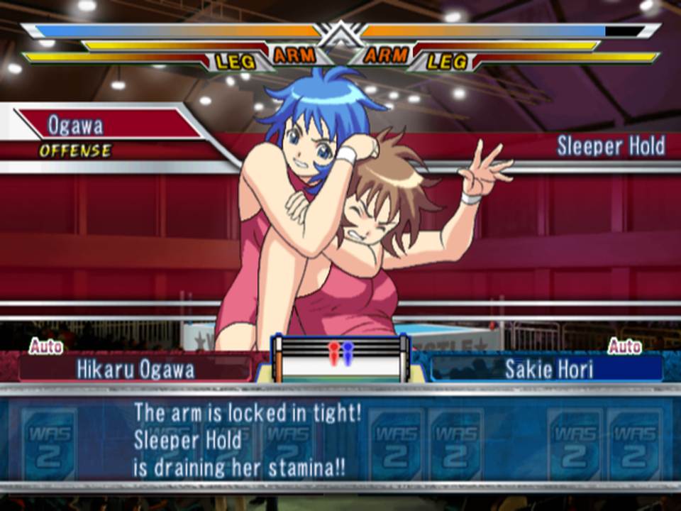
Pins
Each move has a pin type: never (every hold), only with Pin set, automatic (big suplexes, bombs, drivers, presses, the Moonsault) or cradle. When a pin happens, she always covers; there's no cover roll in this game from the code.
- Count 1 and 2: she kicks out by her health. At 20% health or more she's always out by two.
- A partner may break it up, and at the ropes there's a rope break roll.
- With any health left, a normal pin wins at most 5%, and only in the last 50 points of health. A small move from a much stronger wrestler is kicked out almost always.
- At zero health, only grit saves her: about 2 × grit % in singles, 1.4 × in tag, 1 × in six-woman, +30 with Indomitable. As coded, this reads the pinner's grit (a likely bug).
Level correction (new): the game remembers the highest-level pin or hold each wrestler has used. A pin or hold 1 / 2 / 3 / 4 / 5+ levels lower works only 90 / 80 / 60 / 40 / 20% as well. Cradles aren't affected.
Don't pin with a weak move after a big one has failed; finish with something at least as big.
Cradles
Roll-Up, Inverted Cradle, Small Package Hold, Rolling Cradle and La Magistral can't win at 40% health or more. Below that they win with (level ÷ (her health in tenths + 1)) × 10 %, health left or not: a level-5 cradle wins 50% at under 10% health. Grit doesn't help against them. The Pinfall skill turns every pin into a cradle-style pin.
Submissions
A hold lasts up to (level + 1) ÷ 2 rounds. Holds of level 1-2 can't win by submission. Each round, the wrestler caught in it chooses:
- Reach the Ropes: one step toward the ropes, still taking the round's damage; at the ropes, the hold is broken. Some holds (Romero Special, Stretch Muffler, Dragon Cavernaria) pin her in place.
- Break Free: health tenths + Dexterity ÷ 2 + 2d6 + 2 a round, against the holder's Hold attack + 2d6.
If she stays in, she may give up: about (Hold attack − Hold defence + level) ÷ 2 %, more below 30% health (twice as fast for limb holds). At zero health it becomes a grit contest: (holder's grit − hers + 20) %. Endurance shrugs off 40% of give-ups from the code.
Back to topTag Matches, Time Limits and the CPU
Tag and Six-Woman Matches
- One legal wrestler per side holds the cards. Tag happens only if your card wins, and adds the health gap to your score.
- Double cards (in the ring): pick a partner and one of six double-team moves. Taiko Drum Barrage and Double Dropkick are always open; the Double Lariat, Piledriver, Powerbomb and Impact need the pair's morale to be close and their combined rating high, with looser limits for best partners from the code.
- Breaking up pins and holds: a partner comes in when the victim's health is low enough for her distance (below 60% at her own corner, only at zero at the far ropes), then needs 2-3 exchanges before she can again. Whether the save gets through depends on the victim's health, distance, Speed and size against the opponent's partner, friendship, and Cut Play.
Time Limits
The limit counts exchanges, not minutes. Time up is always a draw from the code.
| Bout | Singles | Tag | Six-woman |
|---|---|---|---|
| Ordinary or title match | 40 | 50 | 66 |
| Main event | 48 | 60 | 80 |
| Some tournament and league formats | no limit (unverified which) | ||
How the CPU Plays
- It plays its highest-scoring card, with no randomness, adjusted by each wrestler's card strategy, and plays a finisher card the moment it has one.
- Moves: one of the three biggest it can make without the level cost (40 / 30 / 30%).
- Pins: 100 / 80 / 50 / 20 / 5 / 2 / 1% when you're at 0-6 tenths of health. Tags to a fresher partner; returns from outside after 1 / 2 / 3 exchanges for a Face / Normal / Heel.
- No difficulty setting changes how it plays, and its card numbers are slightly worse than yours.
Matches You Don't Watch
Skipped matches, and the CPU promotions' shows, aren't simulated from the code. Each wrestler's power is
rating + 5 × grit + 10 × her best attack grade
(teams add theirs), and the gap sets the odds: even is 50/50, 51-100 ahead wins 62%, 151-200 ahead 89%, 201+ ahead always. Close timed matches are drawn 1% of the time. Skip to End of Match from the START menu uses the same odds, with a chance of a draw when few exchanges are left and a chance for a hurt favourite to lose.
Back to topSkills in Matches
Special skills are innate: each wrestler has a few, shown on her profile. These are the ones that act in matches from the code:
| Skill | Effect |
|---|---|
| Throw / Hold / Power / Strike / Aerial Atk | +1 attack grade in that type, +2 damage |
| Throw / Hold / Power / Strike / Aerial Def | +1 defence grade in that type, −2 damage taken |
| Ring General | her best card type comes up 30% |
| Big-Match | +3% finisher card chance |
| Clutch | +1 score below 50% health and 5+ tenths behind |
| Explosive | +1 attack in her best of Throw, Strike, Aerial |
| Fighting Spirit | +1 attack and defence against an opponent rated 25%+ higher |
| Trash Talk | from the apron: the opponent −1 in her worst type |
| Challenger / Presence | blue / red corner in a title match: finisher and card bonuses when hurt; give-up and kick-out help otherwise |
| Judgment / Focus | reversals roll twice / opponents reverse about half as often |
| Killer S / Killer G | 6% criticals with matching level 6+ moves; KO / referee stoppage |
| Brute Strength, Outside Fighter, Brutal | more damage (+4, +4 outside, +10%) |
| Sturdy, Flexible, Berserker | damage taken changes (see Damage) |
| Iron Wall | Take the Hit counts one level higher |
| Razor | doubles the chance of making her bleed |
| Balanced, Escape Artist | harder to knock down / to take outside |
| Stamina, Supportive | +20% recovery / +20% to a partner's recovery from the apron |
| Endurance, Indomitable, Pinfall | resists give-ups 40% / +30% kick-out at zero / every pin is a cradle-style pin |
| Cut Play | better at breaking up pins and holds |
Brawler, Ring Smarts and Madness have no match effect anywhere in the code. President skills don't act in matches.
Back to topMatch Strategy
- Small moves early, big moves late. At full health every move pays its level. In Manual, check her health against the level.
- Dump weak cards early while she lands small moves; three or more losses in a row add +1, +3, +5. Then rush with your best cards. "Ideal: win two, lose one" (fans).
- After a loss, a card that only matches her score wins the tie.
- Save the finisher card for a big move. Against her finisher, a Take the Hit just before soaks most of it (fans).
- Avoid reversal-prone moves on a hurt, dexterous opponent, especially with low cards; big suplexes and bombs are the usual victims.
- Pins need her at zero, and then it's her grit. Below 40%, cradles steal wins. Never drop to a lower-level pin or hold than one already tried.
- Submissions: level 3+ holds only, in the centre of the ring, with Hold attack well above her Hold defence.
- Tag in a fresher partner for the bonus; keep partners near your corner for saves.
- Skip matches safely when your side's power is 200+ higher; close ones are coin flips.
Possible bugs in the match code
- Pins read the wrong wrestler's grit: the rope break and the kick-out at zero health use the pinner's grit, Strength and skills (Indomitable, Presence), so a gritty wrestler's own pins get kicked out more and her grit does nothing when she's pinned. Fans' rumour that "Indomitable doesn't work" fits.
- Limb-hold finishers add +15 to the limb instead of +40 health: probably the fans' "joint finisher bug".
- Limb give-ups check her health, not the worn limb meter.
- The Lariat's reversal compares the wrong rating (the same slip as the first game).
- Skip to End of Match in tag matches ignores the ratings (50/50).
- The double-team move limits only apply in Manual; the CPU, Auto and Semi-Auto can use any of the six.
All read in the code, none confirmed in the game yet.
Starting a Promotion
Management mode is the heart of the game. You found a women's wrestling promotion, build it month by month, and take it into the Final Series against the rival promotions. There's no fixed plot: the code picks every scene from the calendar, your wrestlers' stats and random rolls from the code.
New Game Settings
| Setting | Choices | What it changes |
|---|---|---|
| Players and promotions | 1-4 players (each presses ○ on their own controller), then 2-5 promotions in all | More active promotions make crowds a little bigger (×1.1 to ×1.3) |
| Years until the Final Series | 1-99, 5 by default | When the first Final Series is held; after that it comes back every 4 years. Change Years in the system menu moves it until then. |
| Difficulty | LEVEL.1, 2 or 3 | Starting money: 5,000 / 4,000 / 3,000 AP (nothing else was found) |
| Era | Dawn of Joshi Pro, Warring Rivals, Dawn of a New Era | Which wrestlers are around, and when each one debuts (see the timeline) |
| President skills | two of 16 (START confirms) | Your own strengths as president |
| Name, short name, logo, home base | the name entry has Kanji, Kana and ABC pages | Your home base is where your founding share boost lands |
| CPU promotions | enough to make up the number of promotions | Which rivals you face, and which stars start on their rosters (Rival Promotions) |
| Era | As the game describes it |
|---|---|
| Dawn of Joshi Pro | "Future stars are starting to emerge, but homegrown talent is scarce; an era that needs foreign help." |
| Warring Rivals | "Homegrown talent is gathering, and new promotions rise and fall: the warring-states era of joshi pro." |
| Dawn of a New Era | A mature scene built around New Japan Joshi Pro. |
Your secretary, Kiriko Inoue, opens the game: the promotion has no wrestlers yet, a show needs six, and a late founding show hurts the business.
President Skills
Pick two of the 16 at New Game from the code:
| Skill | Effect |
|---|---|
| Eloquence | Scouting visits, transfer rolls and talks ×1.5 (talks succeed 84%, mediation 40%) |
| Network | Rookie scouting only finds the top three talent grades |
| Wealth | +50 AP every month (beats Assets after 30 months) |
| Assets | +1,500 starting AP |
| Management | Venue rent, running cost and tour costs −10% |
| Publicity | Attendance ×1.05 |
| Salesmanship | More showbiz offers for your wrestlers |
| Bodywork | Injuries ×0.8 |
| Basics, Throw, Sub., Power, Strike or Aerial Coaching (six skills) | The president can coach that style, at ×1.4 |
| Charisma | 30% of rivals' successful transfers of your wrestlers are cancelled (unverified that it covers your promotion) |
| Worldly | Overseas partnerships cost ×0.8 |
For recruiting, take Eloquence and Network. For money, Wealth or Management.
The Month
One turn is one month, and the game starts in April of Year 1 from the code:
- Office work: any number of commands, as AP allows.
- End Month: book the month's shows, 0 to 8 show days.
- The shows, then the monthly financial report.
- Month change: events and news for the next month.
The year counter goes up each April and wraps around, so the game has no last year.
| When | What |
|---|---|
| January | Pro Wrestling Awards, then contract renewals |
| February / March | Valentine's Day / White Day |
| March of a Final Series year | The Final Series |
| May | First-pitch offers |
| October | School festival offers |
| December | EX League invitation (rating 2500+, 2 or more non-junior wrestlers); CPU promotions never invade |
The Office Menus
| Menu | Commands and costs |
|---|---|
| Staff | Roster: Tryout (1-99 AP), Scouting (50 AP a region), Transfers, Book Guest, Release, Retirement (urge one to retire), Tour Abroad (5 AP a wrestler a month), Vacate Title. Coaches: Hire Coach (100 AP), Dismiss Coach |
| Business | Partnership and End Partnership, Expand Facilities and Sell Facilities, Create Belt, Campaigns (advertising), Events (Autographs 50 AP, Concert 100 AP), Invade, Vacation (30 AP a wrestler) |
| Info | Promotion Data, History, Roster, Rankings, Belts, Influence Map, Other Promotions (all free) |
| Gym | Coaching (Individual, Group, Special 20 AP), Coaches (assignments), Talk (10 AP, once per wrestler a month), Sparring (a practice match), Office |
| End Month | book this month's shows |
| START (system menu) | Save, Load, Options, Change Years, Watch CPU, Quit Game from the code |
Other costs: a present on a wrestler's 20th birthday (10 AP), returning White Day gifts (10 AP each).
Back to topMoney
AP is the only currency: 1 AP is ¥100,000, and at month end AP changes by the month's profit from the code.
Income
| Source | Amount |
|---|---|
| Tickets | ¥4,000 a head: 25 spectators make 1 AP |
| TV rights, monthly | cable or local 10 AP, national late-night 25, prime time 50, golden time 100 |
| Merch shop or restaurant, monthly per prefecture | 1-9 AP by your share there (table below) |
| Sponsors (up to 4) | each (popularity − 600) ÷ 5 AP a month |
| Showbiz work | movies, commercials, photo books, CDs (Events) |
| Concerts | the top wrestler's popularity × three dice ÷ 100 AP |
| Awards | MVP 300, Rookie 150, best singles bout 150, best tag 100, best junior 100 AP |
| Your share in the prefecture | under 8% | 8% | 15% | 22% | 29% | 36% | 43% | 50% | 57%+ |
|---|---|---|---|---|---|---|---|---|---|
| Shop income, AP a month | 1 | 2 | 3 | 4 | 5 | 6 | 7 | 8 | 9 |
A goods boom (4% a month) or a restaurant on TV (5%) is a "fever" month: restaurants pay ×15. The goods boom is bugged and pays merch shops next to nothing instead of ×10 from the code.
Expenses
- Venue rent per show day: capacity × ¥4,000 × the hall's rate, whether or not it fills (Venues).
- Salaries: each wrestler's annual salary ÷ 12, every month (Salaries).
- Running cost: your promotion rating ÷ 100 AP a month (rating 3000 costs 30 AP).
- Coaches about 3 AP each a month; tours abroad 5 AP a wrestler; guest and foreign wrestlers 1-50 AP an appearance.
Bankruptcy
Each month that starts below 0 AP counts; a month at 0 or more resets the count. The secretary warns after the first and second, and the third month in a row is bankruptcy. It isn't game over: the promotion restarts with nothing (wrestlers, coaches, belts, partnerships and facilities gone, TV ended, share halved everywhere) and the starting AP. Selling facilities refunds 70%, so sell before the third month from the code.
Back to topShows
Venues and Rent
384 venues, 8 per prefecture, from 500 to 55,000 seats; most prefectures top out at 4,000-5,500. Rent is a rate of a sell-out's takings, charged on capacity, so the rate is the break-even attendance:
| Seats | up to 1,000 | 1,001-2,000 | 2,001-3,000 | 3,001-5,000 | 5,001-7,000 | 7,001-10,000 | 10,001-29,999 | 30,000+ |
|---|---|---|---|---|---|---|---|---|
| Indoor | 30% | 33% | 41% | 54% | 62% | 71% | 76% | 85% |
| Outdoor | 25% | 26% | 34% | 43% | 56% | 62% | 72% | 85% |
A dome must be 85% full to break even; a small hall makes money at 30%. Outdoor venues are cheaper, but weather hits their crowds.
Show Formats
- Tour (one venue a day, any prefectures) or single venue (every day at one hall).
- Normal cards, leagues (3+ days), tournaments (2+ days), special matches, team matches, one-night tournaments and open leagues.
- A show needs six available wrestlers. Matches can be manual, semi-auto or auto, watched or skipped; the box office only counts the card and the result, never how a match was played.
What Fills a Hall
A crowd is a walk-up part plus a core part from the code. In plain words:
- Walk-up grows with your share there and the card's top four wrestlers' popularity, and is cut by bad weather and by coming back too soon: 1 month since your last show there → 25%, 2 → 50%, 3 → 75%, 4+ → 100%.
- Core is driven by stars. Each top-four wrestler at 800+ popularity brings fans that grow with the square of her popularity above 750 (800 brings 12, 1000 brings 312, 1200 brings 1012, 1500 brings 2812). Below 800 she brings none. Once you have stars, this term dominates.
- The core is multiplied by the number of matches (3-4 ×1.0, 5-6 ×1.2, 7+ ×1.4), the main event (up to ×1.4 when its wrestlers are as popular as your top four), repeats of the same main event this month (down to ×0.7), and the quality of everyone on the card by rating.
- A title on the line adds at least 5%; Publicity adds 5%; skipping a Final Series month costs 30%.
Build long cards: 7+ matches, your two most popular wrestlers in a singles main event, a title on the line, and a different main event each day.
Rating, TV, Belts and Facilities
Promotion Rating
Your promotion's rating is mostly the sum of your wrestlers' popularity (the top one ×1.5 at 800+), plus half the prestige of each belt you hold and each overseas partner's value, 3,000 per HQ level, 300 per gym and dorm level, and a little per shop. It sets the running cost (rating ÷ 100 AP a month) and gates TV (3000) and belts from the code.
TV
An offer comes at rating 3000 with a wrestler at 600+ popularity: a local station if nearly all your recent shows were in your home region, otherwise cable. Take it; there's no downside. Contracts run 6 months, then the sum of your top three wrestlers' popularity ÷ 10, plus luck, decides renewal:
| Current slot | Cancelled | Downgraded | Renewed | Upgraded |
|---|---|---|---|---|
| Cable / local | under 201 | 201-280 | 281+ → late-night | |
| Late-night | under 201 | 201-280 → local | 281-340 | 341+ → prime |
| Prime | under 251 | 251-320 → late-night | 321-380 | 381+ → golden |
| Golden | under 251 | 251-380 → prime | 381+ |
Score = top three popularity ÷ 10 + random 0-99. Golden time needs the top three at about 1100+ each. A scandal pulls the show for 2 months.
Belts
| Belt | Cost | Rating needed | Wrestlers needed |
|---|---|---|---|
| First | 1,000 AP | 2000 | 6 |
| Second | 3,000 AP | 3000 | 8 |
| Third | 5,000 AP | 4000 | 10 |
A belt not defended for 5 months brings a warning; at 6 it's stripped.
Facilities
| Facility | Cost of each level (AP) | Effect |
|---|---|---|
| HQ building (3 levels) | 5,000 / 10,000 / 30,000 | rating +3,000 a level (and 30 AP a month more running cost) |
| Dorm (5) | 500 / 1,000 / 3,000 / 5,000 / 10,000 | wrestler limit 6 / 8 / 10 / 12 / 14 / 16 |
| Gym (4) | 500 / 1,000 / 1,500 / 2,000 | coach limit 1-5; two special trainings a month from level 2 |
| Tour bus (4) | 500 / 1,000 / 1,500 / 2,000 | trust +1 to +4 a month; injuries −5% a level |
| Merch shop (one per prefecture) | 500 | income by share |
| Restaurant (one per prefecture) | 700 | income by share; ×15 in a fever month |
Selling a level refunds 70%. Overseas partnerships cost 600-1,100 AP (×1.5 if the promotion already has a partner, ×0.8 with Worldly), send foreign wrestlers and add to your rating.
Back to topRecruitment
Every wrestler has a hidden talent grade from 0 to 5, 0 best; the series' stars are grade 0. Talent scales all training, from 130% at grade 0 to 80% at grade 5. Rookies appear by debut year, era by era, and can be found until two years past their starting age from the code.
Tryout (1-99 AP)
Once a month, with a free dorm place; you choose whether to hire. Up to 50 + 5 × (roster − 6) AP the first candidate is exactly as good as with 1 AP, so spend 1 AP or 99 AP. 99 is worth it with a small roster and two free dorm places, when it usually brings two candidates.
| Chance of a grade 0-1 rookie | 1-30 AP | 50 AP | 70 AP | 90 AP | 99 AP | 2nd candidate at 99 AP |
|---|---|---|---|---|---|---|
| Roster of 1 | 3.0% | 3.9% | 5.6% | 8.3% | 9.4% | 94% |
| Roster of 6 | 3.0% | 3.0% | 3.6% | 5.0% | 6.1% | 69% |
| Roster of 10 | 3.0% | 3.0% | 3.0% | 3.6% | 4.1% | 49% |
Scouting (50 AP a region)
Three finds born in the region you pick. Scouting beats any tryout: 35% a find for grade 0-1, against at most 9% from a 99 AP tryout. The visit succeeds 60% of the time (70% on a return visit; ×0.7 for Shy wrestlers, ×1.4 Friendly, ×1.5 with Eloquence). Kanto has the most rookies, Hokkaido the fewest; foreign wrestlers are never scouted.
| Talent grade found | 0 | 1 | 2 | 3 | 4 | 5 |
|---|---|---|---|---|---|---|
| Normally | 15% | 20% | 25% | 20% | 10% | 11% |
| With Network | 30% | 40% | 31% |
Transfers
Sign a rival's wrestler or a free agent, once a month. The minimum cost is fixed by her popularity and rating; what counts is the 1-99 AP you add: each one is +1% success (+1.5% with Eloquence), until success is certain from the code.
- Her resistance grows with her rating, her trust in her promotion (×1.5 Loyal or Shy, ×0.7 Wanderer or Friendly), her popularity, your roster size, and her rank in her promotion (+30 / +20 / +10 for its top three).
- Each failure lowers her trust in her promotion, so chasing a star with 99 AP month after month works: an ace goes 0% → 6% → 26% → 51% → 69% (with Eloquence 43% → 78% → 92% → 100%).
- It always fails for a champion, a wrestler entered in the EX League or Final Series, or one touring abroad.
- After signing, her trust in you is high: wrestlers unhappy at a rival love their new home.
| Example | +50 AP | +99 AP | +99 with Eloquence |
|---|---|---|---|
| Weak free agent | 52% | 100% | 100% |
| Mid free agent | 25% | 74% | 100% |
| A rival's number 3 | 0% | 46% | 97% |
| A rival's ace | 0% | 0% | 43% |
Book Guest hires a freelancer for a set number of months, paid up front; the booking ends if she signs elsewhere.
Back to topKeeping Your Wrestlers
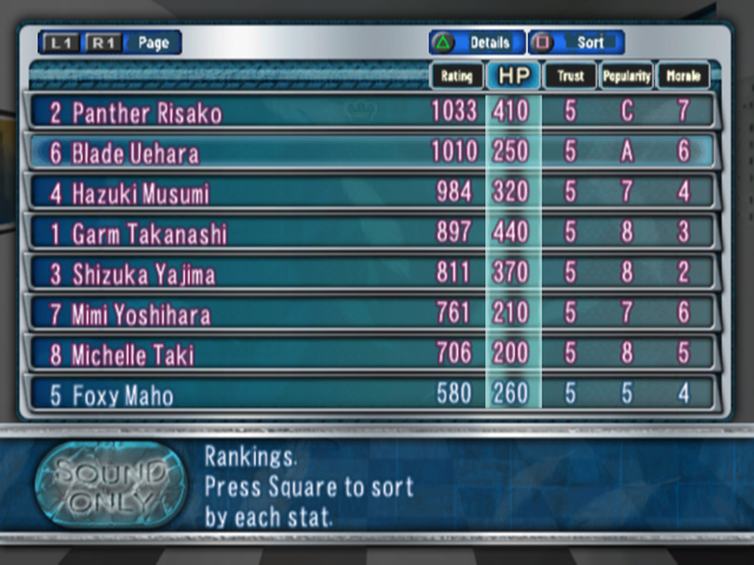
Salaries and Renewals
Every January each wrestler asks for a new salary, by her rating, popularity and greed. You get three offers from the code:
| Offer | Result |
|---|---|
| 111%+ of her demand | satisfied: trust +200, affection +100 |
| 96-110% | normal |
| 70-95% | unhappy: her trust is capped at 850 for good |
| under 70% | very unhappy; after a third such offer she probably leaves |
Offer 111% of the demand; never go below 96%.
Trust, Affection and Morale
Each wrestler has trust (in your promotion), affection (for you, the president) and morale, each 0-1050. Trust matters most:
- Below 100, she refuses practice half the time. 40 or less brings a "thinking of leaving" warning; below 6, she leaves 10% of months. Low trust also makes her a target for rivals' poaching.
- 800+ trust with 800+ affection opens her private events and puts her in the ending (Romance).
- Trust rises with good renewals, vacations, a tour bus and successful talks; it falls with failed special training, dismissed coaches and unhappy contracts.
- Talk (Gym, 10 AP, once per wrestler a month): Praise, Scold or Encourage, each 70% (84% with Eloquence); Mediate clears a grudge 20% (40%). How much each changes trust, affection and morale differs per wrestler.
Retirement
At 30 or older she always retires. Younger, only in decline, holding no belt, and below 80% of her best rating. A level-5 injury ends a career. Retirement (urging her to retire) only works past her peak. A retired wrestler may offer to become a coach from the code.
Back to topTraining and Growth
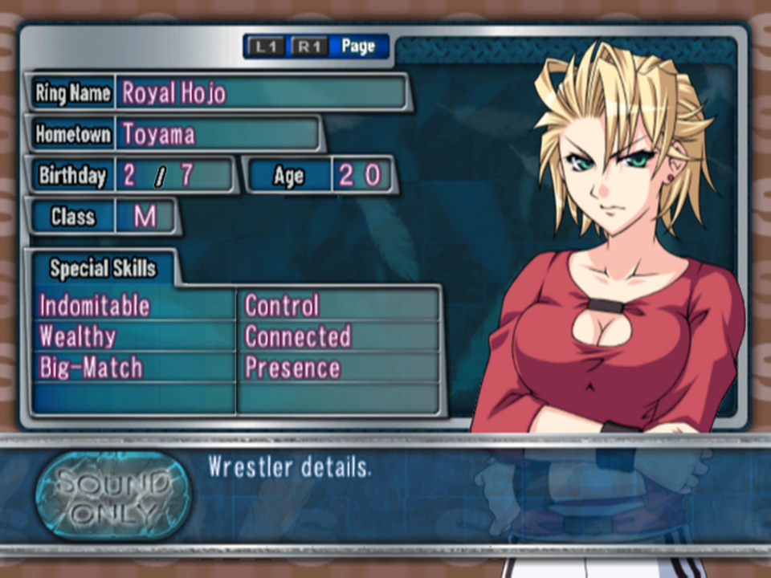
Stats and Grades
Fifteen stats: attack and defence for Throws, Holds, Power, Strikes and Aerial (up to 2,000 each), and the basics Strength, Dexterity, Stamina, Recovery and Speed (up to 1,200 each). On screen they show as grades at 100, 200 ... 800, 950, 1100, 1250, 1400, 1550, 1750 and 1950. Rating is the average of the 15 stats plus 10 per learned move from the code.
Age Phases
| Phase | Fast growth | Growth | Peak | Decline | Late decline |
|---|---|---|---|---|---|
| Stat cap | potential +200 | +200 | +0 | −300 | −600 |
| Natural growth a month | +6 per 300 below the cap | +4 | 0 | −4 per 300 above | −6 |
| Training bonus | +80 | +40 | 0 | −40 | −80 |
Growth always lasts 4 years from her starting age; her type decides how fast, her length how long the peak and decline last. The cap isn't a hard limit: training adds on top of it.
Training
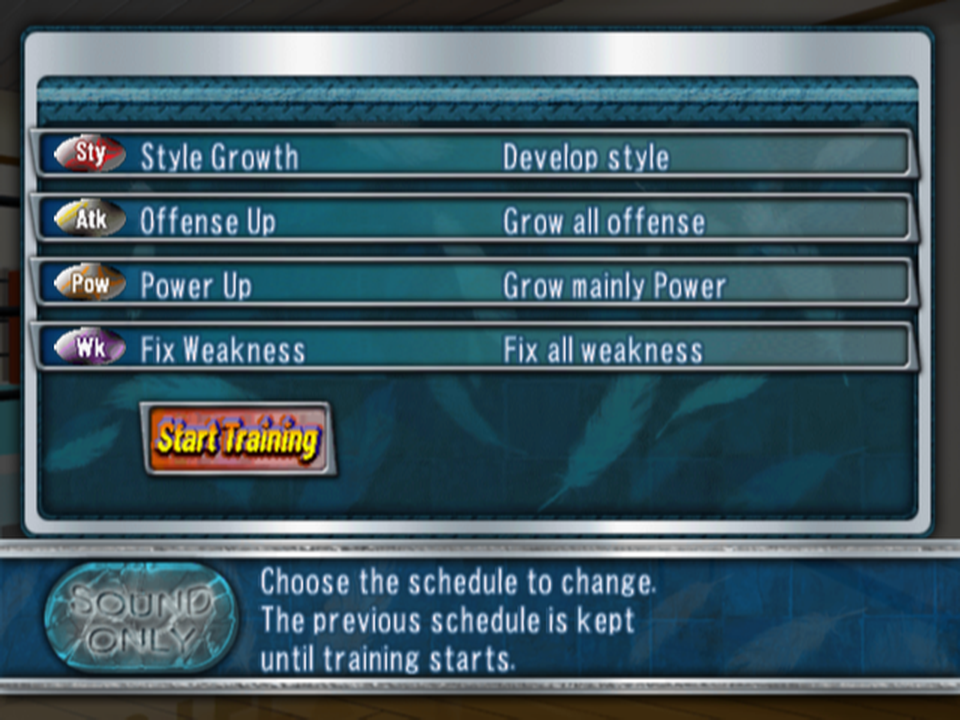
Each wrestler has one month's training power, and each of the four schedule slots spends all of it. Power comes from training time (cut by every match she has that month), multiplied by a coach (1.3-1.5; the president 1.4), special training (×2 on success, ×0.5 on failure), her age phase and her talent from the code.
- Focus. Every share of points is rounded down separately, so the default Develop Style (spread over everything) wastes about half the points at low power. Pick a move type or a single basic stat (Move Types or Build Basics).
- Coaches multiply training time and raise the trainee's caps to the coach's own stats +100 while she's growing: a specialist coach lets a low-potential wrestler grow past her potential.
- Special training (20 AP, needs a coach; twice a month from gym level 2) succeeds about 80% of the time. Do it before starting practice. Risks: a slump next month (5%), or she goes missing from practice after a failure.
- New moves need 15-180 EXP by level; each learned move adds 10 to her rating.
Matches and Injuries
| Opponent's rating minus hers | 201+ | 151-200 | 101-150 | 51-100 | −49 to 50 | −99 to −50 | −149 to −100 | −199 to −150 | −200 or less |
|---|---|---|---|---|---|---|---|---|---|
| Win | 16 | 8 | 6 | 5 | 4 | 3 | 2 | 1 | 0 |
| Draw | 8 | 6 | 4 | 3 | 2 | 1 | 0 | 0 | 0 |
| Loss | 3 | 3 | 3 | 2 | 1 | 0 | 0 | 0 | 0 |
Each match also costs training time, so a win over a stronger opponent pays off; many matches against weaker ones slow growth. Injuries come from heavy moves taken (at most 3% a match; halved for Durable wrestlers, doubled against a Brutal opponent). Levels 1-2 she plays hurt; 3 means a month in hospital, 4-5 three months, and 5 ends her career.
Back to topEvents and Romance
Each wrestler has about 108 short scenes: scouting, joining, training, media work, injuries, retirement, endings. The code decides when each plays; the scenes only show it. Fixed are the opening, the calendar events, the Final Series and the endings; nearly everything else is a monthly roll once her stats are high enough from the code.
Monthly Events
| Event | Needs | Chance a month |
|---|---|---|
| Fan club | popularity 600+ | 30% |
| Sponsor | popularity 1200+ (900+ if Connected); the most popular qualifier | 10% with no sponsors, then 5 / 2 / 1% |
| Commercial or movie offer | popularity 1000+ (a movie takes the whole month) | 1-15% by her skills |
| Photo book or CD | popularity 800+ | 5% (10% Alluring or Singer) |
| One-day police chief | morale and popularity 600+ | 5% |
| First pitch (May) / school festival (October) | popularity 1100+ / 700+ | 10% |
| 20th birthday (gift 10 AP) | trust and affection 800+ | certain |
| Valentine's Day (February) | trust and affection 850+, top three by affection | certain |
| Private event 1 | 18 or older, trust and affection 800+ | 10% |
| Private event 2 | after event 1, 20 or older, trust and affection 850+ | 10% |
| Grudge | after a match against that opponent | 5% a match |
| Slump, refuses practice, goes missing, leaves | special training; trust under 100; a failed special training; trust under 6 | 5 / 50 / 15 / 10% |
Media work turns out a flop, so-so, hit, big hit or super hit by her popularity and skills (Actor, Alluring and Singer help; Bad Actor and Tone-Deaf hurt), worth up to +120 popularity and 600 AP.
Romance and the Event Pictures
Each wrestler has two event pictures for the gallery: one in her vacation scene, one in her private events. The private events need high trust and affection, so raise them with good renewals, talks and vacations. The same wrestlers appear in the ending.
- Grudges start in matches and play a scene the next month; mediation in a talk clears them.
- The Revolution and Rebel factions of the first game exist only as unused scenes here.
Rival Promotions
The CPU promotions you can face, and who is on each roster when a game starts in each era from the code. New Japan Joshi Pro is the big one: its TV deal is never cut.
| Promotion | Short | Dawn of Joshi Pro | Warring Rivals | Dawn of a New Era |
|---|---|---|---|---|
| New Japan Joshi Pro 新日本女子プロレス | NJWP | Panther Risako, Mimi Yoshihara, Shizuka Yajima | Panther Risako, Beauty Ichigaya, Bomber Kishima, Mighty Yukiko, Mimi Yoshihara, Hazuki Musumi | Riyu Kikuchi, Bomber Kishima, Mighty Yukiko, Chiaki Murakami, Chiharu Murakami, Macky Ueto, Lucky Uchida |
| World Joshi Pro ワールド女子プロレス | WWPA | nobody | Azumi Nakamori | nobody |
| WARS | WARS | nobody | Suzumi Ishikawa, Thunder Ryuko | Suzumi Ishikawa, Thunder Ryuko, Miyuki Sanada, Kazumi Fujiwara, Mifuyu Yagyu |
| JWI | JWI | nobody | nobody | Hikaru Ogawa, Beauty Ichigaya, Toshimi Minami, Grizzly Yamamoto |
| Tokyo Joshi Pro 東京女子プロレス | TWP | Michelle Taki | Michelle Taki, Sonic Cat, RIKKA | Michelle Taki, Sonic Cat, Diana Rial, Maiden Sakurazaki, RIKKA |
| Pacific Joshi Pro 太平洋女子プロレス | PWPW | nobody | Teddy Cat Hori, Blade Uehara | Teddy Cat Hori, Blade Uehara |
| Japan Sea Joshi Pro 日本海女子プロレス | JSW | nobody | nobody | nobody |
| Palacion パラシオン | PLC | nobody | nobody | nobody |
| Battle Dragon 激闘龍 | BD | nobody | nobody | nobody |
| Pro Wrestling NEO プロレスリング ネオ | NEO | nobody | nobody | Dolphin Hayase |
- A CPU promotion holds 3-8 show days a month, tours prefectures it hasn't visited for 4+ months, and prefers its strongest ones from the code.
- Invasions: never in December. New Japan Joshi Pro needs 12+ wrestlers and targets promotions rated 2000+. If you invade a CPU, it retaliates: 70% the next month, certainly the month after.
- Poaching: a CPU with 1,000+ AP and dorm space tries most months. Nine times in ten it goes for a free agent; otherwise it picks among the 10 lowest-trust wrestlers of a promotion with 7+ wrestlers. High trust, Loyal or Shy wrestlers, and your top three are the hardest to take.
- CPU promotions can go bankrupt and restart.
The Final Series and the Endings
The Final Series is the game's one story thread from the code:
- Held in March, after the years you set at New Game (5 by default), then every 4 years.
- Three divisions (openweight singles, openweight tag, junior singles), one entry per division, four days: three league days, then the finals. Points are summed per promotion.
- Accepting the early invitation pays 300 AP, but you can't hold your own shows that month. Each division entered pays 50 AP, plus a bonus for finalists.
- 1st / 2nd / 3rd: share +5 / +2 / +1% everywhere, +100 / +50 / +25 AP, and +150 / +75 / +30 popularity per wrestler.
- Staying out costs 10% of your share in every prefecture. Always enter.
Spoiler: the endings
- Best ending: your promotion wins the Final Series. Normal ending: you took part but didn't win. Nothing if you stayed out. Each is shown once.
- The staff roll shows up to 10 of your wrestlers with trust 500+ and affection 800+, by rating. The top one plays her personal ending: the fonder version if her affection is above 800. With nobody qualifying, there's no personal ending.
- Play continues afterwards: the secretary promises "revenge in 4 years" (unverified).
Management Strategy
- Debut early with six wrestlers: scouting (50 AP) for quality, 1 AP tryouts to fill gaps.
- Train with focus: a move type or a single stat, not Develop Style. Put the best coaches and special training on young, high-talent wrestlers.
- Stars are everything: popularity follows rating, fans grow with the square of (popularity − 750), and the top three set TV. Concentrate on a few stars rather than raising everyone a little.
- Book venues you can fill. The rent rate is the break-even occupancy. A sell-out adds +3% share instead of +1%. Avoid outdoor venues in winter and the rainy season.
- Rotate prefectures: 4 months between visits for a full walk-up crowd, and visit everywhere you hold share at least every 6 months.
- Build long cards: 7+ matches, your top two in a singles main event, a title on the line, no repeated main events.
- Grow share with shows, autograph sessions and concerts; ads only in big months; shops only where your share is already high.
- Take TV as soon as the rating reaches 3000; keep a 600+ wrestler.
- Keep trust high: offer 111% at renewal, buy a tour bus, send wrestlers on vacation.
- Poach patiently: add exactly what reaches certainty, or 99 AP a month for stars.
- Always enter the Final Series, and have a high-affection wrestler ready for the personal ending.
- Watch the books: three negative months is bankruptcy. Sell facilities first.
Known Bugs
- Goods boom: a merch "fever" month pays next to nothing instead of ×10 from the code.
- Star bonus: a card with 0-3 stars gets the biggest attendance bonus (×1.5), where the CPU's copy of the same table gives ×1.0 from the code.
- Tryout odds: the top row of the odds table is worse than the second, probably a typo in the data.
The Roster
All 242 wrestlers: 79 Japanese wrestlers, each with a second persona who appears years later, and 84 from overseas. The ratings are the exhibition grades shown on the match screen: attack / defence for each move type, then the five basics. Her best attack is highlighted.
- LEVEL is Special Match's setting: LEVEL 1 is her rookie form, LEVEL 3 her best from the code. In management mode her stats grow and decline with age and training instead.
- Starts says where she is when a management game begins in the chosen era: on a rival's roster, a free agent, or debuting as a rookie in a later year. Overseas wrestlers come with the overseas partners from the code.
- Click a row for her profile, special skills and moves.
| Wrestler | Title | Starts | Align | Throw | Hold | Power | Strike | Aerial | Str | Dex | Sta | Rec | Spd |
|---|
The Roster in Pictures
The Japanese wrestlers, grouped by when they're around in a management game. Click a picture to see it larger. (The overseas wrestlers have no portrait of this kind.)
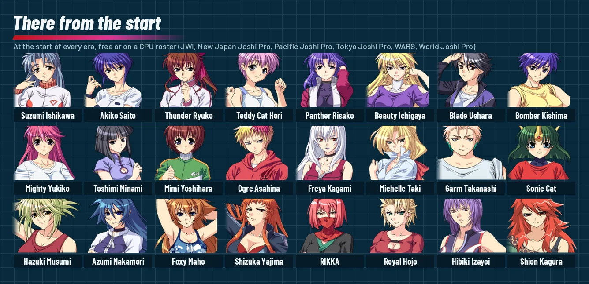
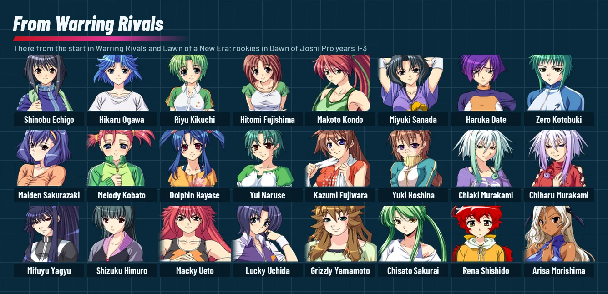
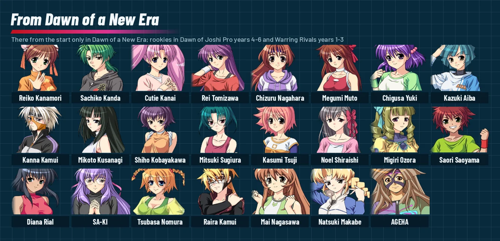
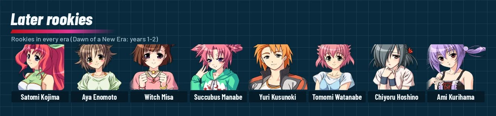
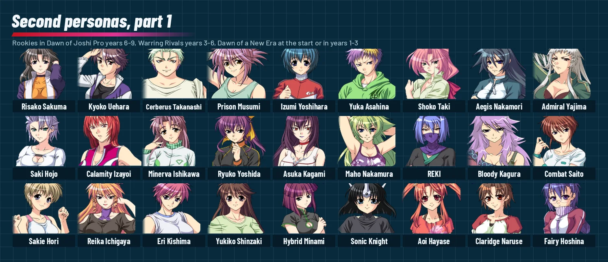
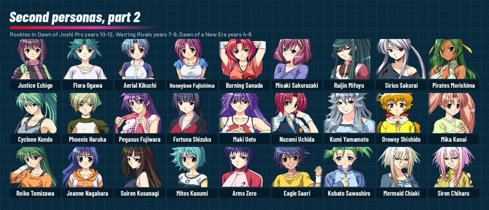
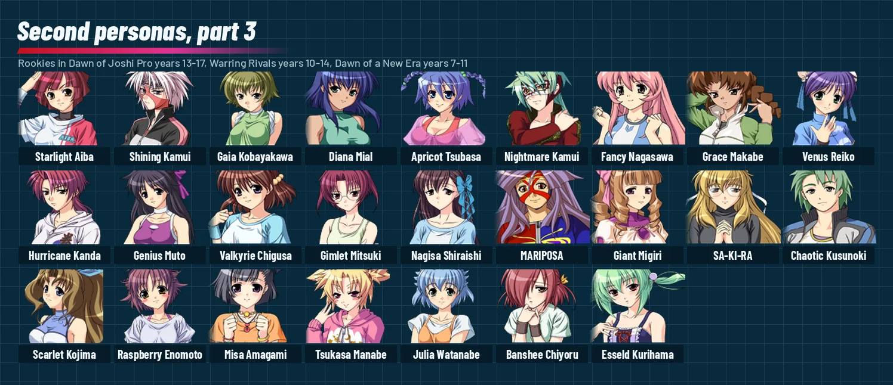
Every Move
The game's 223 moves, read from its move table from the code. Countered by lists the moves the loser of an exchange can turn it into (Reversals). Signature of names the wrestlers the move's record belongs to (our reading). Click a row to see everyone who has it, with the level.
| Move | Type | Countered by | Signature of | Wrestlers |
|---|
Secrets
Fans summed it up as "no particular hidden elements or tricks", and the code agrees: no button codes, no secret names, no unlockable modes or wrestlers. What there is, is below. The technical side (addresses, patches, what was searched for) is in HIDDEN_CONTENT.md.
The Gallery
The title menu's Gallery has 36 pages of nine pictures: two event pictures for each of the 79 wrestlers in each of her two personas, 316 in all. One is her vacation scene, the other comes from her private events (Romance). A picture unlocks the first time its scene plays; foreign wrestlers have none from the code.
- Gallery progress is shared by all three save slots and only ever grows from the code.
- The All Unlocked patches show every picture from the start verified in game. Your save's own progress is kept, and comes back if you go back to the plain patch.
- Page 36 has a single real picture; the other eight are placeholders. 56 variant pictures are never named by any scene, so you can't page to them.
The START Menu in a Match
Press START during a match for a small menu: switch either side between player control and the computer, change options, or skip to the end of the match verified in game. It hides a developer cheat window (always-reversals, always red's turn, guaranteed give-ups and more) that no menu item opens; a test patch can reach it verified in game.
The Secretary Is a Wrestler
Kiriko Inoue, your secretary, has a complete wrestler record: her own stats and 26 moves. Every roster loop stops just before her, so she never appears in the ring from the code.
Debug Tools Left on the Disc
The game was compiled on 30 July 2008, and its developer menu survives in pieces from the code:
- A script viewer that plays any of the 242 scenes with chosen variables verified in game with a test patch.
- A move check, a portrait check, and BGM, voice and sound-effect tests.
- A debug log of 483 developer messages, switched off.
None of them can be reached without patching the game.
Cut and Unused Content
- Factions: the first game's Revolution and Rebel Armies have scenes in the scripts, but nothing ever starts them.
- Partner scenes for pairs such as the Murakami twins exist, but no code plays them.
- Unused pictures: an older boot logo, a red "Accsident!!" (sic) stamp, WINNER and title banners, a gold FINAL SERIES logo, and the title and gallery screens of an unrelated 2004 visual novel left over from an earlier project.
- Moves no wrestler has, including a JO Cyclone, Splash Mountain and a Shooting Star Press, and a gap where a finisher was probably cut.
- Three pieces of music only the dead sound test plays.
Japanese Glossary
Terms you'll meet in the menus and on screen of the original Japanese game, with what the English translation shows instead.
| Japanese | Meaning | On screen in the translation |
|---|---|---|
| 団体経営dantai keiei | promotion management | Management |
| 特別試合tokubetsu shiai | special match | Special Match |
| 団体戦dantaisen | team battle | Team Battle |
| ワンナイトトーナメントwan naito tōnamento | one-night tournament | One-Night Tournament |
| オープンリーグōpun rīgu | open league | Open League |
| ギャラリー / オプション / ロードgyararī / opushon / rōdo | gallery / options / load | Gallery / Options / Load |
| 難易度nan'ido | difficulty | "difficulty" (LEVEL.1-3 kept) |
| 年代nendai | era | "era" |
| 女子プロレス黎明期joshi puroresu reimeiki | dawn of women's wrestling | Dawn of Joshi Pro |
| 群雄割拠gun'yū kakkyo | rival warlords vying | Warring Rivals |
| 新時代の幕開けshin-jidai no makuake | dawn of a new era | Dawn of a New Era |
| 社長shachō | company president (you) | President (wrestlers say Boss) |
| 社長スキルshachō sukiru | president skill | President skills, Skill 1/2 |
| 団体名 / 団体略称 / 団体マークdantaimei / dantai ryakushō / dantai māku | name / abbreviation / logo | Name / Short Name / Promotion Logo |
| 本拠地honkyochi | home base | Home Base |
| 人事jinji | personnel | Staff |
| 運営un'ei | operations | Business |
| 情報jōhō | information | Info |
| ジムjimu | gym | Gym |
| 終了shūryō | end | End Month |
| 選手 / コーチsenshu / kōchi | wrestlers / coaches | Roster / Coaches |
| 新人テストshinjin tesuto | rookie tryout | Tryout |
| 新人スカウトshinjin sukauto | rookie scouting | Scouting |
| 移籍交渉iseki kōshō | transfer negotiation | Transfers |
| 参戦交渉sansen kōshō | negotiating a guest appearance | Book Guest |
| 選手解雇senshu kaiko | releasing a wrestler | Release |
| 引退勧告intai kankoku | advising retirement | Retirement |
| 海外遠征kaigai ensei | overseas tour | Tour Abroad |
| タイトル返上taitoru henjō | giving up a title | Vacate Title |
| コーチ雇用 / コーチ解雇kōchi koyō / kōchi kaiko | hire / dismiss coach | Hire Coach / Dismiss Coach |
| 海外提携(破棄)kaigai teikei (haki) | overseas tie-up (cancel) | Partnership / End Partnership |
| 設備拡張 / 設備売却setsubi kakuchō / setsubi baikyaku | expand / sell facilities | Expand Facilities / Sell Facilities |
| 自社ビル / 寮 / ジム設備 / 移動バスjisha biru / ryō / jimu setsubi / idō basu | HQ / dorm / gym equipment / bus | HQ Building / Dorm / Gym Equipment / Tour Bus |
| グッズショップ / 飲食店guzzu shoppu / inshokuten | merch shop / restaurant | Merch Shop(s) / Restaurant(s) |
| ベルト新設beruto shinsetsu | new belt | Create Belt |
| 営業活動eigyō katsudō | sales/promotional activity | Campaigns |
| イベント / サイン会 / コンサートibento / sain-kai / konsāto | events / autograph session / concert | Events / Autographs / Concert |
| 殴り込みnagurikomi | raid, invasion | Invade |
| バカンスbakansu | vacation | Vacation |
| 団体データ / 団体の歴史dantai dēta / dantai no rekishi | promotion data / history | Promotion Data / History |
| 所属レスラー / ランキング / ベルト一覧shozoku resurā / rankingu / beruto ichiran | roster / rankings / belt list | Roster / Rankings / Belts |
| 勢力分布 / 他団体データseiryoku bunpu / ta-dantai dēta | influence map / other promotions | Influence Map / Other Promotions |
| セーブ / 年数変更 / COM観戦 / モード終了sēbu / nensū henkō / komu kansen / mōdo shūryō | save / change years / watch CPU / quit mode | Save / Change Years / Watch CPU / Quit Game |
| 指導 / 練習試合 / オフィスshidō / renshū jiai / ofisu | coaching / practice match / office | Coaching / Sparring / Office |
| 個人指導 / 全体指示 / 特訓kojin shidō / zentai shiji / tokkun | individual / group / special training | Individual / Group / Special |
| 会話: ほめる / しかる / はげます / 仲裁するkaiwa: homeru / shikaru / hagemasu / chūsai suru | talk: praise / scold / encourage / mediate | Talk: Praise / Scold / Encourage / Mediate |
| 個性を伸ばす / 弱点克服 / 休暇 / 技kosei o nobasu / jakuten kokufuku / kyūka / waza | develop style / overcome weakness / rest / moves | Develop Style / Fix Weakness / Vacation / Moves |
| 練習開始renshū kaishi | start training | Start Training |
| 筋力 / 器用度 / 体力 / 回復力 / 速さkinryoku / kiyōdo / tairyoku / kaifukuryoku / hayasa | basic stats | Strength / Dexterity / Stamina / Recovery / Speed |
| 投げ / 極め / パワー / 打撃 / 飛びnage / kime / pawā / dageki / tobi | throw / hold / power / strike / aerial | Throw(s) / Hold(s) / Power / Strike(s) / Aerial(s) |
| 攻 / 防kō / bō | attack / defence | Atk / Def |
| 必殺技 / 合体hissatsuwaza / gattai | finisher / combined | Finisher / Double |
| 評価hyōka | rating | Rating |
| 人気 / 信頼 / モラルninki / shinrai / moraru | popularity / trust / morale | Popularity / Trust / Morale |
| 属性zokusei | alignment | Alignment (Face / Heel) |
| 特殊能力tokushu nōryoku | special abilities | Special Skills |
| 通常戦 / リーグ戦 / トーナメント戦tsūjōsen / rīgusen / tōnamentosen | card formats | Regular / League / Tournament |
| 巡業 / 単独会場(tour) / tandoku kaijō | tour / single venue | Tour / Single Venue |
| シングル / タッグ / 6人タッグマッチshinguru / taggu / rokunin taggu matchi | match types | Singles Match / Tag Match / Six-Woman Tag |
| 観戦 / 否観戦 / 試合開始kansen / hikansen / shiai kaishi | watch / don't watch / start match | Watch / Skip / Start Match |
| オート / セミオート / マニュアルōto / semi-ōto / manyuaru | control modes | Auto / Semi-Auto / Manual |
| フォール / タッチ / リターンfōru / tatchi / ritān | pin / tag / return | Pin / Tag / Return |
| ベルト奪取 / ベルト防衛beruto dasshu / beruto bōei | belt taken / defended | TITLE CAPTURED! / TITLE DEFENDED! |
| 超満員 / 札止めchōman'in / fudadome | packed house / sold out | FULL HOUSE / SOLD OUT |
| 契約更改keiyaku kōkai | contract renewal | CONTRACT RENEWAL |
| プロレス大賞puroresu taishō | wrestling awards | PRO WRESTLING AWARDS |
| ファイナルシリーズfainaru shirīzu | Final Series | FINAL SERIES |
| EXリーグEX rīgu | EX League | EX LEAGUE |
| 新日本女子プロレスShin-Nihon Joshi Puroresu | the big rival | New Japan Joshi Pro |
| COM団体思考中komu dantai shikōchū | CPU promotion thinking | CPU Thinking... |
Q&A
Is there an English version?
Not an official one: the game was only released in Japan. This guide was written alongside an English fan translation, released as a patch for your own copy of the game.
Is there a story?
No fixed plot. The code picks every scene from the calendar, your wrestlers' stats and random rolls; the one thread is the Final Series. See Events and Romance.
What do I need to unlock?
Nothing. There are no unlockable modes, wrestlers or codes; only the gallery fills as you play. See Secrets.
How do I save in management mode?
Press START on the office's main menu for the system menu, then Save. See Saving.
What does the difficulty change?
Your starting money: 5,000 / 4,000 / 3,000 AP at LEVEL.1 / 2 / 3. Nothing else was found.
Which era should I pick?
It decides which rookies debut when. Dawn of Joshi Pro is short of homegrown talent and leans on foreign help; Dawn of a New Era starts with a mature scene. The timeline shows the debuts by era.
Which president skills are best?
Eloquence and Network for recruiting; Wealth or Management for money. See President Skills.
How do I lose?
Start three months in a row below 0 AP. It isn't game over: the promotion restarts with nothing and half its share. See Bankruptcy.
How much AP should I spend on a tryout?
1 AP, or 99 when your roster is small and two dorm places are free; middle amounts are wasted. Scouting finds much better rookies. See Recruitment.
Why am I losing money on shows?
Rent is charged on the hall's size, not the crowd. Book halls you can fill and give each prefecture 4 months' rest. See Shows.
Do wins make my wrestlers popular?
No: popularity follows rating, which comes from training, plus media work and awards. See Wrestler Popularity.
Which training is best?
A move type or a single basic stat; the default Develop Style wastes points. See Training.
My wrestler refuses to train, or left.
Trust below 100 brings refusals; below 6 she may leave. Offer 111% at renewal, send her on vacation, buy a tour bus, Talk. See Trust, Affection and Morale.
How much should I offer at contract renewal?
111% of her demand: trust +200 and affection +100. Below 96% hurts for good. See Salaries and Renewals.
Why can't I hold a concert?
A concert needs a wrestler who has released a CD; CD offers come at popularity 800+.
How do I get on TV?
Reach rating 3000 with a wrestler at 600+ popularity, and accept the offer. See TV.
What are the endings?
Decided by the Final Series, plus a personal ending for the wrestler who trusts you most. Details in The Final Series and the Endings (folded, for spoilers).
How do I fill the gallery?
Each wrestler has a vacation picture and a private-event picture; the private events need high trust and affection. See The Gallery.
Can I skip matches?
Choose Skip on the match start screen, or press START in a match and Skip to End of Match. Watch CPU in the system menu sets whether you see the rivals' shows.
Back to topCredits and Legal
This guide is a non-commercial fan project, not affiliated with or endorsed by the game's developers or publishers. Wrestle Angels: Survivor 2 and its names, characters and trademarks belong to their owners.
The text is written in our own words from the game's code and data and play in an emulator. It contains no scans or images from any printed guidebook. The screenshots are from the English fan translation, and the roster pictures are made from the game's own wrestler portraits as the translation patches them (with the English names), for reference.
Sources: the Japanese strategy wikis for this game are gone and no fan guide could be found, so this guide rests on the game itself. The rules from the code are documented in more detail in the translation's MANAGEMENT.md and HIDDEN_CONTENT.md, and the event timeline covers every event month by month.
AI assisted with this guide.
The guide text is shared under Creative Commons Attribution-ShareAlike 4.0 (CC BY-SA 4.0; see LICENSE). You're free to share and adapt it, as long as you credit this guide and share alike.
Contributing
Corrections welcome, especially for anything marked from the code or (unverified) that you've seen work differently in the game: open an issue at github.com/kactusken/Wrestle-Angels-Survivor-2-English.
Back to top